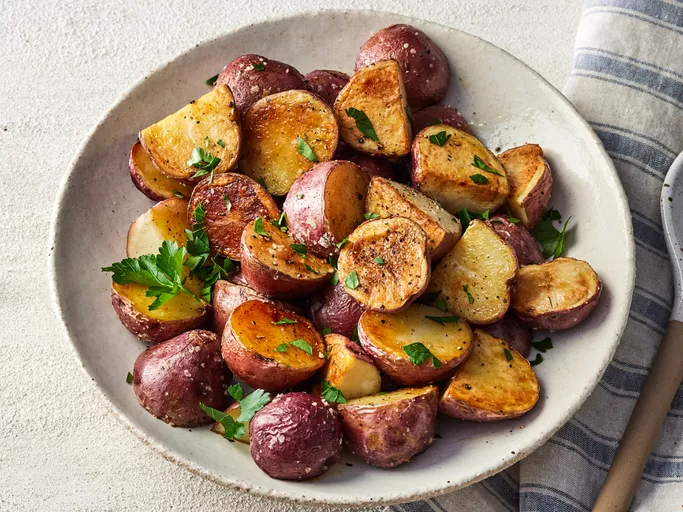

Roasted New Red Potatoes

Succulent Red Potatoes
Description
Here's a recipe for Roasted red potatoes at their best, a plain and simple recipe for red
potatoes tossed in olive oil with added salt and pepper then roasted to perfection.
Ingredients
- Red Potatoes: 3 pounds of small red potatoes (halved)
- Olive Oil: 1/4 cup of olive oil
- Seasonings: 1 teaspoon of salt and freshly ground black pepper
Steps
- Gather all ingredients. Preheat the oven to 400 degrees F (200 degrees C) and adjust the oven rack to the lowest position.
- Toss potatoes with oil, salt, and pepper in a bowl. Arrange, cut-side down, on a rimmed cookie sheet or jellyroll pan.
- Roast potatoes in the preheated oven until tender and golden brown, 20 to 30 minutes. Transfer to a serving dish.
- Server and enjoy!
Back